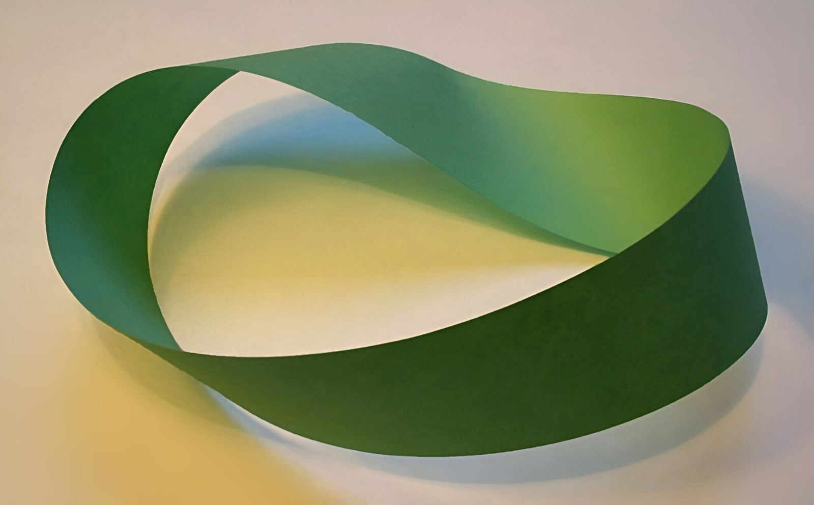
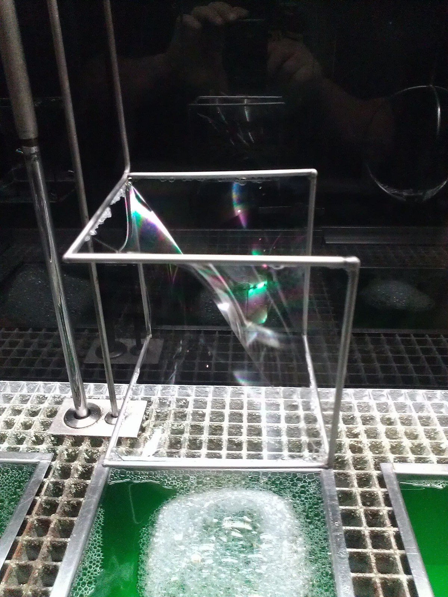

第26回
皮を張った太鼓が、並んで打たれている。
Kenneth C. Zirkel（2023年、ストーニーブルック大学での太鼓の演奏）／CC BY-SA 4.0／Wikimedia Commons（横長に切り出した）
前回の最後に、小さな正方形を貼り合わせると内側の辺は消えて外周だけが残る、と予告した。この回はそれを定理として言い切る。平面の領域ではグリーンの定理（まわりを回る量 ＝ 中の回転の合計）、曲面ではストークスの定理（ふちを回る量 ＝ 面を貫く回転の合計）、立体ではガウスの発散定理（表面から出ていく量 ＝ 中の湧き出しの合計）。3つとも「内部で微分したものを足すと、境界の値だけが残る」という1つの形で、第10回の微積分学の基本定理を高い次元へ広げたものである。電磁気学のガウスの法則・アンペールの法則・ファラデーの法則は、この3つの定理の言い換えである。
新しい記号は緑色の枠（記号）で「①読み方 ②日本語での意味 ③省略していない書き方 ④どこで出会うか」を書く。この回で新しく出る記号は、境界を表す $\partial V,\ \partial S,\ \partial D$ と、3つの定理の名前だけである。式の中身は、第24回の $\nabla\cdot$、$\nabla\times$ と、第25回の線積分・面積分でできている。
第25回は別に作られている。そこで定義された $\oint_C\boldsymbol F\cdot d\boldsymbol r$ と $\iint_S\boldsymbol F\cdot\boldsymbol n\,dS$ を、この回では「定義済みの記号」として使い、使うたびにリンクを張る。ただし、読むときに迷わないよう、意味は 1.4 でもう一度、短く書き直す。
各節は、「なぜ必要か → 定義 → 数値で一度手を動かす → 導出 → 確かめ → よくある誤解」の順に進む。高校・1年で習った内容も、短く一度は書く。覚えている部分は飛ばしてよい。
最初に、この回で新しく説明する記号と、前の回で説明済みの記号を分けて並べる。右の列の「→」で説明のある場所へ飛べる。
| 記号 | 読み方 | ざっくりした意味 | 説明 |
|---|---|---|---|
| $\partial D$、$\partial S$、$\partial V$（境界） | ラウンド・ディー、ラウンド・エス、ラウンド・ブイ | 領域・曲面・立体の「ふち」（向きつき） | →1.2 |
| 境界の向きの約束（左手に領域／外向き／右ねじ） | ― | $\partial D,\partial V,\partial S$ にどちら向きを付けるか | →1.3 |
| 境界上の積分の書き方の省略の段階（S0〜S3） | ― | 線積分と面積分の書き方を、完全形から短い形まで並べたもの | →1.4 |
| グリーンの定理 | グリーンのていり | 平面で、ふちを回る量 ＝ 中の $Q_x-P_y$ の合計 | →2.1 |
| ガウスの発散定理 | ガウスのはっさんていり | 表面から出ていく量 ＝ 中の発散の合計 | →3.1 |
| ストークスの定理 | ストークスのていり | ふちを回る量 ＝ 面を貫く回転の合計 | →4.1 |
| 単連結 | たんれんけつ | 穴のない領域（領域の中の輪が、中で縮められる） | →4.5 |
| 記号 | 意味 | 初出 |
|---|---|---|
| $:=$、$=$、$\approx$ | 左の名前を右の式で決める／等しい／ほぼ等しい | 第1回 2.2、2.1、2.4 |
| 総和 $\sum$ | 足し算を並べる記号 | 第4回 |
| 太字ベクトル $\boldsymbol a$、成分、転置 $\mathsf T$、ノルム $\|\boldsymbol a\|$、単位ベクトル | 数の組、その中の数、縦横を入れ替える、長さ、長さ1のベクトル | 第5回、第5回、第5回、第5回 6.1、第5回 6.2 |
| 内積 $\boldsymbol a\cdot\boldsymbol b$、外積 $\boldsymbol a\times\boldsymbol b$ | 成分どうしを掛けて足した数／両方に直角なベクトル | 第5回 7.2、第5回 |
| $\lim$、$o(\cdot)$ | 極限、「それより速く0に近づく」 | 第6回、第6回 |
| 定積分 $\int_a^b$、リーマン和、微積分学の基本定理 | 細かく刻んだ和の極限、定積分は端点の差 | 第10回、第10回、第10回 5.2 |
| 偏微分 $\dfrac{\partial f}{\partial x}$、$f_x$、順序交換 | 他の変数を止めた微分 | 第11回 2.1、3.1、5.1 |
| 重積分 $\iint_D$、三重積分 $\iiint_V$、球座標 | 平面・空間の領域での積分 | 第13回、第13回、第13回 |
| 場、ベクトル場、位置ベクトル $\boldsymbol r$、法線ベクトル $\boldsymbol n$ | 点ごとに決まるベクトル、面に直角なベクトル | 第23回 1.1、1.1、3.8 |
| $\nabla$、勾配 $\nabla f$、ポテンシャル $\phi$ | 偏微分を並べる命令、いちばん増える向き、元のスカラー場 | 第23回 3.2、3.2、4.2 |
| 発散 $\nabla\cdot\boldsymbol F$、回転 $\nabla\times\boldsymbol F$、ラプラシアン $\nabla^2$、調和関数 | 湧き出し、渦、勾配の発散 | 第24回 2.1、3.1、4.1、4.2 |
| 曲線 $C$ と $\boldsymbol r(t)$、線積分 $\int_C\boldsymbol F\cdot d\boldsymbol r$、$\oint$ | 曲線に沿った仕事・循環 | 第25回、第25回、第25回 |
| 面積要素 $dS$、$d\boldsymbol S=\boldsymbol n\,dS$、流束 $\iint_S\boldsymbol F\cdot\boldsymbol n\,dS$ | 曲面の小さな面積、面を通り抜ける量 | 第25回、第25回、第25回 |
PHOTO 1｜現実

緑の紙の帯を一度ひねって、輪にした、メビウスの帯である。
David Benbennick（メビウスの帯）／CC BY-SA 2.0／Wikimedia Commons（縮小した）
第24回の最後（5.2）で、予告をした。小さな正方形のまわりを回る量（1.3 の (1.2)）を、たくさん貼り合わせると、隣り合う辺は反対向きに数えられて消え、外周だけが残る。この回は、その予告を定理として言い切る。出発点は、すでに知っている次の定理である。
$f$ が $[a,b]$ で連続な導関数 $f'$ をもつとき（第10回の微積分学の基本定理）：
$$ \int_a^bf'(x)\,dx=f(b)-f(a) $$
これを日本語で読む。「区間 $[a,b]$ の内部で、微分 $f'$ を足し合わせると、区間のふち（端点 $a$ と $b$）での $f$ の値の差だけが残る」。内側の切れ目で何が起きているかは、図1.1 のとおりである。区間を細かく切ると、切れ目ごとの値は「ある段の上端」であり「次の段の下端」でもあるので、足し合わせると消える。残るのは両端だけである。
まず、1変数の微積分学の基本定理を、図1.1 の形で思い出す。
第24回で、小さな正方形の出入りを数えて貼り合わせる、という考えを使った。それは、これとまったく同じ構造である。違いは次元だけで、区間が平面の領域や曲面や立体になり、端点がふちの曲線や曲面になる。この回で示す定理は、次の3つである。
ここで言葉が足りない。「ふち」とは何か、どちら向きに数えるのか。基本定理の右辺 $f(b)-f(a)$ では、右端 $b$ は $+$、左端 $a$ は $-$ だった。つまりふちにも向き（符号）がある。これを正確に決める。
①読み方：「ラウンド・ディー」「ディーの境界」。$\partial S$ は「ラウンド・エス」「エスの境界」、$\partial V$ は「ラウンド・ブイ」。
②日本語での意味：領域・曲面・立体のふち。次元が1つ低い図形で、向きが付いている。
③省略していない書き方：次の4つの場合がある。
④どこで出会うか：グリーン・ストークス・ガウスの定理、電磁気学の積分形の法則（ガウスの法則、アンペールの法則、ファラデーの法則）、流体の保存則。
$\partial$ は偏微分と同じ文字だが、別の意味である。偏微分 $\dfrac{\partial f}{\partial x}$ の $\partial$ は、分数の形の中にあって「他の変数を止めて微分する」という意味だった（第11回）。境界の $\partial D$ は、$D$ や $S$ や $V$ という図形の名前のすぐ左に付く形で、「そのふち」という意味である。見分けるには、$\partial$ の隣が「分数」か「図形の名前」かを見る。
もう1つ、第24回の演算子 $\partial_x$（$\dfrac{\partial}{\partial x}$ の略）とも混ぜない。$\partial_x$ は下付きの変数が付く。
定理を言い切るために、次の3つを仮定する。細かい条件の証明はしない（「証明を省略する」と書く）。
この仮定が成り立たない例（場が一点で定義されない）を、3.6 と 4.5 で扱う。
次元ごとに、境界がどう見えるかを図1.2 に並べる。
向きを決めないと、定理の両辺の符号がそろわない。基本定理でも、$f(b)-f(a)$ の $+$ と $-$ は、「右端が $+$」と決めてあるから意味をもった。3つの場合に、約束を並べる。
①読み方：「きょうかいのむきのやくそく」。
②日本語での意味：領域・立体・曲面のふちを、定理の両辺の符号が合うように一方向に決めたもの。
③省略していない書き方：
④どこで出会うか：この回の3つの定理、電磁気学の積分形の法則（第24回 3.4 の回転の向きと同じ右ねじ）。
曲面 $S$ とその境界の向きの結びつきを、図1.3 で見る。
$\boldsymbol n$ を選ぶことは、曲面の「表と裏のどちらを表とするか」を選ぶことである。$\boldsymbol n$ を逆向きに選べば、$\partial S$ の向きも逆になり、ストークスの定理の両辺は両方とも符号が変わるので、等式は崩れない（4.2 の例で確かめる）。
平面の領域 $D$ は、特別な曲面である。$xy$ 平面上の $D$ に $\boldsymbol n=\boldsymbol e_z=(0,0,1)^{\mathsf T}$（上向き）を選べば、$\partial D$ は上から見て反時計回りで、「領域を左手に見る」と一致する。グリーンの定理はストークスの定理の特別な場合になる（4.3）。
第25回の線積分と面積分を、この回では短い形で使う。短い形を使う前に、完全な形から1段ずつ並べておく。以後、短い形を使うときはこの表に戻ること。
(1) 曲線に沿った積分（線積分）。曲線 $C$ を $\boldsymbol r(t)$（$t$ は $\alpha$ から $\beta$）と媒介変数で表すとする。
| 段階 | 書き方 | 何を省いたか | 省いても誤解が起きない理由／起きる場面 |
|---|---|---|---|
| S0 | $\displaystyle\int_\alpha^\beta\boldsymbol F\bigl(\boldsymbol r(t)\bigr)\cdot\boldsymbol r'(t)\,dt$ | （省略なし）。媒介変数 $t$ と、曲線の速度 $\boldsymbol r'(t)$ を明示 | ―（第25回の定義） |
| S1 | $\displaystyle\int_C\boldsymbol F\cdot d\boldsymbol r$ | $t$ と $\boldsymbol r'(t)\,dt$ を、$d\boldsymbol r$ という1つの記号にまとめる | $d\boldsymbol r=\boldsymbol r'(t)\,dt$ と約束済みなら S0 に戻れる（第25回）。向きの選び方（$t$ の増える向き）は S1 に書かれていない |
| S2 | $\displaystyle\oint_{\partial D}\boldsymbol F\cdot d\boldsymbol r$ | 閉曲線であることを積分記号の丸 $\oint$ で示す。向きは「1.3 の約束」とする | $\oint$ は閉曲線に沿った1周を意味する。向きを省いたのは、1.3 で決めたから。向きを逆にすると符号が変わる |
| S3 | $\displaystyle\oint_{\partial D}(P\,dx+Q\,dy)$ | $\boldsymbol F\cdot d\boldsymbol r$ を成分で書いたもの。$\boldsymbol F=(P,Q)^{\mathsf T}$、$d\boldsymbol r=(dx,dy)^{\mathsf T}$ なので $P\,dx+Q\,dy$ | 内積の定義（第5回）そのもの。$dx=x'(t)\,dt$、$dy=y'(t)\,dt$ |
(2) 曲面に沿った積分（面積分、流束）。
| 段階 | 書き方 | 何を省いたか | 省いても誤解が起きない理由／起きる場面 |
|---|---|---|---|
| S0 | $\displaystyle\iint_{E}\boldsymbol F\bigl(\boldsymbol r(u,v)\bigr)\cdot\bigl(\boldsymbol r_u\times\boldsymbol r_v\bigr)\,du\,dv$ | （省略なし）。曲面を $\boldsymbol r(u,v)$ で表し、媒介変数の領域 $E$ で積分する | ―（第25回の定義） |
| S1 | $\displaystyle\iint_{S}\boldsymbol F\cdot\boldsymbol n\,dS$ | $u,v$ と、$\boldsymbol r_u\times\boldsymbol r_v$ を「法線 $\boldsymbol n$ と面積要素 $dS$」に分けて書く | $\boldsymbol n\,dS=\dfrac{\boldsymbol r_u\times\boldsymbol r_v}{\|\boldsymbol r_u\times\boldsymbol r_v\|}\cdot\|\boldsymbol r_u\times\boldsymbol r_v\|\,du\,dv$ で S0 に戻れる（第25回）。$\boldsymbol n$ の選び方が書かれていない |
| S2 | $\displaystyle\iint_{\partial V}\boldsymbol F\cdot d\boldsymbol S$ | $\boldsymbol n\,dS$ を $d\boldsymbol S$ にまとめる | $d\boldsymbol S:=\boldsymbol n\,dS$ と約束済みなら S1 に戻れる（第25回）。$\partial V$ では $\boldsymbol n$ は外向き（1.3） |
| S3 | $\displaystyle\iint_{\partial V}\boldsymbol F\cdot d\boldsymbol S$ の積分記号に丸を付けた「∯」を使う書き方（本教材では S2 の形を使う） | 閉曲面であることを、積分記号に丸を付けて示す | 丸を付けるかどうかは教科書による。付けても付けなくても、閉曲面の上での積分である点は同じ。丸を付けた記号は表示できない環境があるので、この教材では丸なしの $\iint_{\partial V}$ と書く |
平面（2次元）の領域 $D$ と、ベクトル場 $\boldsymbol F=(P,Q)^{\mathsf T}$ を考える。第24回で、小さな正方形のまわりを回る量が $(Q_x-P_y)h^2$ になった。これを大きな領域に広げる。
平面の領域 $D$ が、区分的に滑らかな単純閉曲線 $\partial D$ で囲まれていて、$P,Q$ が $D$ とその境界を含む範囲で連続な偏導関数をもつとき、
$$ \oint_{\partial D}\bigl(P\,dx+Q\,dy\bigr)=\iint_D\Bigl(\frac{\partial Q}{\partial x}-\frac{\partial P}{\partial y}\Bigr)\,dx\,dy $$
ここで $\partial D$ の向きは 1.3 の約束（領域を左手に見る）。左辺は 線積分（1.4 の S3）、右辺は 重積分 である。
日本語で読む：「領域のふちを反時計回りに1周して、場がふちに沿って押す力を足した量（循環）は、領域の中の各点で第24回 1.3 の『単位面積あたりの循環』$Q_x-P_y$ を足した量に等しい」。
ベクトルの形で書けば、$\boldsymbol F=(P,Q)^{\mathsf T}$ として、$\displaystyle\oint_{\partial D}\boldsymbol F\cdot d\boldsymbol r=\iint_D(Q_x-P_y)\,dA$（$dA=dx\,dy$ は面積要素）。$Q_x-P_y$ は、$\boldsymbol F$ を $(P,Q,0)^{\mathsf T}$ と見たときの回転 $\nabla\times\boldsymbol F$ の第3成分である。
$D$ を正方形 $[0,1]\times[0,1]$、$\boldsymbol F=(P,Q)^{\mathsf T}=(-y^2,\ xy)^{\mathsf T}$ とする。
① 右辺：$Q_x=\dfrac{\partial(xy)}{\partial x}=y$、$P_y=\dfrac{\partial(-y^2)}{\partial y}=-2y$。$Q_x-P_y=y-(-2y)=3y$。
② $\displaystyle\iint_D3y\,dx\,dy=\int_0^1\Bigl(\int_0^13y\,dy\Bigr)dx=\int_0^1\tfrac32\,dx=\tfrac32$。
③ 左辺：反時計回りに4辺を順に通る。
④ 合計：$0+\tfrac12+1+0=\tfrac32$。②と一致する。
領域 $D$ を、1辺 $h$ の小さな正方形で敷き詰める（$D$ のふちの近くは階段状で近似する）。正方形は全部で $N$ 個あるとし、$k$ 番目の正方形を $Q_k$、その左下の角を $(x_k,y_k)$、$Q_k$ のまわりを反時計回りに1周する線積分を $\Gamma_k$ とする。
① 第24回の (1.2) から、小さな正方形のまわりの循環は
$$ \Gamma_k=\oint_{\partial Q_k}(P\,dx+Q\,dy)\approx\Bigl(\frac{\partial Q}{\partial x}-\frac{\partial P}{\partial y}\Bigr)(x_k,y_k)\,h^2 $$
② $k$ について全部足す。左辺の $\sum_k\Gamma_k$ を、辺ごとに数え直す。正方形の辺には2種類ある。
したがって $\sum_k\Gamma_k$ は、外周の辺の線積分の合計、つまり $\oint_{\partial D}(P\,dx+Q\,dy)$ になる。
小さな正方形を貼り合わせたとき、辺の数えられ方を図2.1 に描く。
③ 右辺：$\sum_k\bigl(Q_x-P_y\bigr)(x_k,y_k)\,h^2$ は、リーマン和（面積 $h^2$ の小片に、小片の中の値を掛けて足したもの）である。$h\to0$ とすると $\iint_D(Q_x-P_y)\,dx\,dy$ に近づく。
④ ①の「$\approx$」の誤差は各正方形で $o(h^2)$（第24回の「よくある誤解」で見たとおり、$h^2$ より速く0に近づく）。正方形は $N\approx(\text{面積})/h^2$ 個なので、誤差の総和は $N\cdot o(h^2)=o(1)\to0$。階段状の近似のずれも、$h\to0$ で0に近づく。以上から、等式が成り立つ。
貼り合わせの導出は、極限の細かい議論を省いた。長方形 $D=[a,b]\times[c,d]$ なら、微積分学の基本定理を使って、極限なしで証明できる。$P$ の部分と $Q$ の部分を別々に確かめて、足す。
(a) $P$ だけの部分：$\displaystyle-\iint_D\frac{\partial P}{\partial y}\,dx\,dy=\oint_{\partial D}P\,dx$ を示す。
① 左辺の重積分を、$y$ について先に積分する累次積分にする（第13回）：$\displaystyle-\int_a^b\Bigl(\int_c^d\frac{\partial P}{\partial y}(x,y)\,dy\Bigr)dx$。
② 内側の $y$ の積分に、基本定理を使う（$x$ を止めて、$y$ の関数 $P(x,\cdot)$ と見る）：$\displaystyle\int_c^d\frac{\partial P}{\partial y}(x,y)\,dy=P(x,d)-P(x,c)$。
③ ①に戻す：$\displaystyle-\int_a^b\bigl[P(x,d)-P(x,c)\bigr]dx=\int_a^bP(x,c)\,dx-\int_a^bP(x,d)\,dx$。
④ 右辺 $\oint_{\partial D}P\,dx$ を、4辺に分ける（反時計回り）。下の辺（$y=c$、$x:a\to b$）：$\int_a^bP(x,c)\,dx$。上の辺（$y=d$、$x:b\to a$）：$\int_{x=b}^{a}P(x,d)\,dx=-\int_a^bP(x,d)\,dx$。左右の辺は $x$ が一定で $dx=0$ なので0。
⑤ ③と④は一致する。(a) が示せた。
長方形の場合は、図2.2 のように基本定理を $y$ 方向に1回使うだけで済む。
(b) $Q$ だけの部分：$\displaystyle\iint_D\frac{\partial Q}{\partial x}\,dx\,dy=\oint_{\partial D}Q\,dy$ を示す。(a) の $x$ と $y$ の役割を入れ替えたもの（今度は $x$ について先に積分する）である。
① $\displaystyle\int_c^d\Bigl(\int_a^b\frac{\partial Q}{\partial x}\,dx\Bigr)dy=\int_c^d\bigl[Q(b,y)-Q(a,y)\bigr]dy$。
② 右辺 $\oint_{\partial D}Q\,dy$：右の辺（$x=b$、$y:c\to d$）：$\int_c^dQ(b,y)\,dy$。左の辺（$x=a$、$y:d\to c$）：$-\int_c^dQ(a,y)\,dy$。下の辺と上の辺は $dy=0$ で0。①と一致する。
(a) と (b) を足せば、長方形でのグリーンの定理になる。
グリーンの定理の右辺を $1$ にしたい。$Q_x-P_y=1$ となる $P,Q$ はたくさんある。たとえば $P=-\dfrac y2$、$Q=\dfrac x2$：$Q_x=\dfrac12$、$P_y=-\dfrac12$、$Q_x-P_y=\dfrac12+\dfrac12=1$。すると右辺は $\iint_D1\,dx\,dy=D$ の面積 $A$ になる：
$$ A=\frac12\oint_{\partial D}\bigl(x\,dy-y\,dx\bigr) $$
これは、曲線 $\partial D$ だけから面積が求まる公式である。意味は図2.3 のとおり、$\frac12(x\,dy-y\,dx)$ は原点から曲線上の隣り合う2点を結んだ細い三角形の面積（外積の半分）で、これを全部足している。
面積の公式の意味は、図2.3 の細い三角形で見える。
数値で手を動かす（円）。半径 $r$ の円：$x=r\cos t$、$y=r\sin t$（$0\le t\le2\pi$）。
① $dx=-r\sin t\,dt$、$dy=r\cos t\,dt$。
② $x\,dy-y\,dx=r\cos t\cdot r\cos t\,dt-r\sin t\cdot(-r\sin t)\,dt=r^2(\cos^2t+\sin^2t)\,dt=r^2\,dt$。
③ $A=\dfrac12\int_0^{2\pi}r^2\,dt=\dfrac12r^2\cdot2\pi=\pi r^2$。
楕円。$x=a\cos t$、$y=b\sin t$（$a,b\gt0$）：$x\,dy-y\,dx=a\cos t\cdot b\cos t\,dt-b\sin t\cdot(-a\sin t)\,dt=ab\,dt$。$A=\dfrac12\cdot ab\cdot2\pi=\pi ab$。
グリーンの定理は「ふちに沿った成分」の積分だった。「ふちから外へ出ていく成分」で書き直す。そのために、境界の外向き法線 $\boldsymbol n$ を、境界の小さな変位 $(dx,dy)$ で表す。
① 反時計回りに進む境界の小さな変位を $d\boldsymbol r=(dx,dy)^{\mathsf T}$、その長さを $ds=\sqrt{dx^2+dy^2}$ とする。単位接線ベクトルは $(dx,dy)/ds$。
② 外向きの単位法線ベクトルは、これを時計回りに $90^\circ$ 回したものである：$\boldsymbol n=(dy,\ -dx)/ds$。
③ したがって $\boldsymbol n\,ds=(dy,\,-dx)$。場 $\boldsymbol F=(F_1,F_2)^{\mathsf T}$ との内積は $\boldsymbol F\cdot\boldsymbol n\,ds=F_1\,dy-F_2\,dx$。
平面の外向き法線と、線に沿った小さな変位の関係を図2.4 に描く。
④ グリーンの定理で $P:=-F_2$、$Q:=F_1$ とおく。左辺 $\oint(P\,dx+Q\,dy)=\oint(-F_2\,dx+F_1\,dy)=\oint\boldsymbol F\cdot\boldsymbol n\,ds$。右辺 $Q_x-P_y=\dfrac{\partial F_1}{\partial x}-\dfrac{\partial(-F_2)}{\partial y}=\dfrac{\partial F_1}{\partial x}+\dfrac{\partial F_2}{\partial y}$。これは第24回の発散である。結果：
$$ \oint_{\partial D}\boldsymbol F\cdot\boldsymbol n\,ds=\iint_D\nabla\cdot\boldsymbol F\,dx\,dy \qquad(2.1) $$
「領域のふちから外へ出ていく量 ＝ 領域の中の湧き出しの合計」。次の 3章 の発散定理の2次元版である。
確かめ。$\boldsymbol F=(x,y)^{\mathsf T}$、$D$ を単位円板とする。$\nabla\cdot\boldsymbol F=1+1=2$、右辺 $=2\times\pi\cdot1^2=2\pi$。左辺：円周上で $\boldsymbol n=(x,y)$（外向きの単位ベクトルは位置ベクトルと同じ）、$\boldsymbol F\cdot\boldsymbol n=x^2+y^2=1$。$\oint1\,ds=$ 円周の長さ $=2\pi$。一致する。
(1) 「閉曲線を1周すれば、いつも内側の積分に直せる」は誤り。グリーンの定理は、閉曲線の内側全体で $P,Q$ が滑らかなときにだけ使える。内側に場が定義されない点があるときは使えない（4.5 の例）。
(2) 穴のある領域では、境界は外周と内周の2本になる。内周の向きを間違えると符号が狂う。領域を左手に見る約束を守ると、外周は反時計回り、内周は時計回りになる（図2.5）。
例：$\boldsymbol F=\dfrac{(-y,\,x)^{\mathsf T}}{x^2+y^2}$ を、円環 $1\le r\le2$ で考える。第24回 3.5 のとおり、円環の中で $Q_x-P_y=0$。外周（半径2）を反時計回りに回ると $2\pi$、内周（半径1）を時計回りに回ると $-2\pi$。足して $2\pi+(-2\pi)=0$ で、右辺 $\iint0=0$ と合う。内周の向きを反時計回りにしてしまうと $4\pi$ になって、合わない。
穴のあいた領域では、境界が2本の曲線になる。向きは図2.5 のようにそろえる。
(3) 条件の確認。グリーンの定理は、領域が有限の大きさで、境界が自分と交わらないときの話である。8の字の曲線は、2つの輪の向きが逆になる。それぞれの輪の内側に分けて使う。
グリーンの定理の発散形 (2.1) を、空間に持ち上げる。立体 $V$ と、ベクトル場 $\boldsymbol F=(P,Q,R)^{\mathsf T}$ を考える。「ふちから外へ出ていく量」が、面の上の $\boldsymbol F\cdot\boldsymbol n$ を足したもの（流束）になる。
空間の立体 $V$ が、区分的に滑らかな閉曲面 $\partial V$ で囲まれていて、$\boldsymbol F=(P,Q,R)^{\mathsf T}$ の成分が $V$ とその表面を含む範囲で連続な偏導関数をもつとき、
$$ \iiint_V\nabla\cdot\boldsymbol F\,dV=\iint_{\partial V}\boldsymbol F\cdot\boldsymbol n\,dS $$
ここで $\boldsymbol n$ は $\partial V$ の外向きの単位法線ベクトル（1.3）。左辺は発散の三重積分（$dV=dx\,dy\,dz$ は体積要素）、右辺は閉曲面での流束（1.4 の S1）。$d\boldsymbol S=\boldsymbol n\,dS$ を使えば右辺は $\iint_{\partial V}\boldsymbol F\cdot d\boldsymbol S$。
日本語で読む：「立体の表面から外へ出ていく流れの総量は、立体の中の各点の湧き出し $\nabla\cdot\boldsymbol F$ を足した総量に等しい」。
発散定理の主張を、図3.1 の絵で言い直す。
例1：球。$\boldsymbol F=\boldsymbol r=(x,y,z)^{\mathsf T}$（位置ベクトル）、$V$ を原点中心、半径 $R$ の球とする。
① 左辺：$\nabla\cdot\boldsymbol F=1+1+1=3$（定数）。$\iiint_V3\,dV=3\times(\text{球の体積})=3\cdot\dfrac43\pi R^3=4\pi R^3$。
② 右辺：球面上の外向き単位法線は $\boldsymbol n=\boldsymbol r/R$。$\boldsymbol F\cdot\boldsymbol n=\boldsymbol r\cdot\boldsymbol r/R=R^2/R=R$（球面上で一定）。球面の面積は $4\pi R^2$。$\iint_{\partial V}R\,dS=R\cdot4\pi R^2=4\pi R^3$。
③ ①と②は一致する。
例2：立方体。$\boldsymbol F=(x^2,\ y^2,\ z^2)^{\mathsf T}$、$V=[0,1]^3$（1辺1の立方体）。
① 左辺：$\nabla\cdot\boldsymbol F=2x+2y+2z$。$\displaystyle\iiint_V(2x+2y+2z)\,dV=2\cdot\tfrac12+2\cdot\tfrac12+2\cdot\tfrac12=3$。
② 右辺：6つの面を順に見る。
③ 合計 $1+0+1+0+1+0=3$。①と一致する。
具体例の計算結果を、図3.2 に立方体の絵で残しておく。
第24回 1.2 の2次元の計算を、3次元にする。
小さな直方体から出ていく量。点 $(x,y,z)$ を角とする、1辺 $h$ の小さな立方体 $[x,x+h]\times[y,y+h]\times[z,z+h]$ を考える。
① 右の面（$x$ 座標が $x+h$、外向きは $+x$ 向き）：外向きの成分は $P$。流束は $\displaystyle\iint P(x+h,\,y+s,\,z+u)\,ds\,du$（$s,u$ は $0$ から $h$ まで）。
② 左の面（$x$ 座標が $x$、外向きは $-x$ 向き）：外向きの成分は $-P$。流束は $\displaystyle-\iint P(x,\,y+s,\,z+u)\,ds\,du$。
③ 左右の面を合わせる。同じ位置の右と左を先に引き算する：$\displaystyle\iint\bigl[P(x+h,\,y+s,\,z+u)-P(x,\,y+s,\,z+u)\bigr]\,ds\,du$。角括弧は、$y,z$ を止めて $x$ だけを $h$ 動かしたときの $P$ の変化で、1次近似により $\approx P_x\,h$。これを面積 $h^2$ の面で足すと $\approx P_x\,h\cdot h^2=P_x\,h^3$。
④ 前後の面（$y$ 方向）は $Q_y\,h^3$、上下の面（$z$ 方向）は $R_z\,h^3$。
⑤ 6つの面の合計は
$$ (\text{小さな立方体から出ていく量})\approx(P_x+Q_y+R_z)\,h^3=(\nabla\cdot\boldsymbol F)\,h^3 \qquad(3.1) $$
貼り合わせ。$V$ を小さな立方体で敷き詰め、(3.1) を全部足す。2つの立方体が共有する面では、片方の外向き法線は $+\boldsymbol n$、もう片方は $-\boldsymbol n$ なので、流束 $\boldsymbol F\cdot\boldsymbol n$ の寄与は $+$ と $-$ で消える（図3.3）。残るのは $V$ の表面の面だけで、その合計が $\iint_{\partial V}\boldsymbol F\cdot\boldsymbol n\,dS$。足した左辺はリーマン和で、$h\to0$ で $\iiint_V\nabla\cdot\boldsymbol F\,dV$ になる。誤差の議論は 2.3 ④ と同じ（$N\cdot o(h^3)\to0$）。
発散定理の貼り合わせでは、図3.3 の共有面で寄与が消える。
$V=[a,b]\times[c,d]\times[e,f]$ で、$\boldsymbol F=(0,0,R)^{\mathsf T}$（$z$ 成分だけ）の場合に示す。$P$ の部分と $Q$ の部分は、軸の役割を入れ替えて計算する。たとえば $P$ の部分は、$\iiint P_x\,dV=\iint\bigl[P(b,y,z)-P(a,y,z)\bigr]dy\,dz$（$x$ について先に積分）で、面 $x=b$（$\boldsymbol n=+\boldsymbol e_x$）の流束と面 $x=a$（$\boldsymbol n=-\boldsymbol e_x$）の流束の和になる。3つ足せば直方体でのガウスの定理になる。
① 左辺：$\nabla\cdot\boldsymbol F=R_z$。累次積分で $z$ から先に：$\displaystyle\iint\Bigl(\int_e^f\frac{\partial R}{\partial z}\,dz\Bigr)dx\,dy=\iint\bigl[R(x,y,f)-R(x,y,e)\bigr]\,dx\,dy$。
② 右辺：6つの面のうち、側面（$x=a,b$ と $y=c,d$）では $\boldsymbol n=\pm\boldsymbol e_x$、$\pm\boldsymbol e_y$ なので $\boldsymbol F\cdot\boldsymbol n=0$（$\boldsymbol F$ は $z$ 成分しかない）。上の面（$z=f$、$\boldsymbol n=+\boldsymbol e_z$）：$\iint R(x,y,f)\,dx\,dy$。下の面（$z=e$、$\boldsymbol n=-\boldsymbol e_z$）：$-\iint R(x,y,e)\,dx\,dy$。
③ ①と②は一致する。
流体の密度を $\rho(x,y,z,t)$、速度を $\boldsymbol v$ とする。質量の流れ（単位面積・単位時間あたり）は $\rho\boldsymbol v$。空間に固定した立体 $V$ を考える。
① $V$ の中の質量：$M(t)=\iiint_V\rho\,dV$。その変化の速さ：$\dfrac{dM}{dt}=\iiint_V\dfrac{\partial\rho}{\partial t}\,dV$。
② 質量は表面を通ってだけ出入りする。外へ出ていく量は流束 $\iint_{\partial V}\rho\boldsymbol v\cdot\boldsymbol n\,dS$（外向きが正）。したがって $\dfrac{dM}{dt}=-\iint_{\partial V}\rho\boldsymbol v\cdot\boldsymbol n\,dS$。
③ 右辺に発散定理（$\boldsymbol F:=\rho\boldsymbol v$）：$-\iiint_V\nabla\cdot(\rho\boldsymbol v)\,dV$。
④ ①と③を合わせる：$\displaystyle\iiint_V\Bigl[\frac{\partial\rho}{\partial t}+\nabla\cdot(\rho\boldsymbol v)\Bigr]dV=0$。
⑤ これはどんな $V$ でも成り立つ。角括弧が連続で、ある点で0でなければ、その点の近くの小さな球を $V$ に取れば積分が0でなくなって矛盾する。したがって角括弧の中身は至るところ0：
$$ \frac{\partial\rho}{\partial t}+\nabla\cdot(\rho\boldsymbol v)=0 \qquad(\text{連続の式}) $$
密度が一定（非圧縮）なら $\partial\rho/\partial t=0$ で、$\nabla\cdot\boldsymbol v=0$。第24回 2.3 の「発散0の流れでは、水の体積が変わらない」に戻る。
発散定理から連続の式（質量保存）が出てくる筋道を、図3.4 の箱で追う。
電磁気学のガウスの法則は、積分形と微分形の2つの形で書かれる。
$$ \iint_{\partial V}\boldsymbol E\cdot\boldsymbol n\,dS=\frac{Q_V}{\varepsilon_0}\quad(\text{積分形}),\qquad \nabla\cdot\boldsymbol E=\frac{\rho}{\varepsilon_0}\quad(\text{微分形}) $$
ここで $Q_V$ は $V$ の中の電荷の総量、$\rho$ は電荷密度、$\varepsilon_0$ は真空の誘電率。2つの形は、発散定理でつながる：$Q_V=\iiint_V\rho\,dV$ なので、積分形の左辺に発散定理を使うと $\iiint_V\nabla\cdot\boldsymbol E\,dV=\iiint_V\dfrac\rho{\varepsilon_0}dV$。3.5 の⑤と同じ論法で、被積分関数が等しくなり、微分形が出る。
点電荷の場。原点の点電荷 $q$ の電場は $\boldsymbol E=k\dfrac{\boldsymbol r}{r^3}$、$k=\dfrac{q}{4\pi\varepsilon_0}$（第24回 2.4）。原点を中心とする半径 $\rho_0$ の球面（外向き法線 $\boldsymbol n=\boldsymbol r/r$）で、
$$ \boldsymbol E\cdot\boldsymbol n=k\frac{\boldsymbol r\cdot\boldsymbol r}{r^4}=\frac{k}{\rho_0^2},\qquad \iint\boldsymbol E\cdot\boldsymbol n\,dS=\frac{k}{\rho_0^2}\cdot4\pi\rho_0^2=4\pi k=\frac q{\varepsilon_0} $$
これは積分形の法則と一致する。
ここで注意が1つある。第24回 2.4 で、$\nabla\cdot\boldsymbol E=0$（原点以外）を示した。もし原点を含む球 $V$ に発散定理をそのまま使うと、左辺 $\iiint_V\nabla\cdot\boldsymbol E\,dV=0$、右辺 $=4\pi k\ne0$ となって合わない。理由は、$\boldsymbol E$ が原点で定義されていない（$r=0$ で分母が0）ので、1.2 の「$V$ の中で滑らか」の仮定が成り立たないことにある。
どう直すかは、立体を変えればよい。原点を中心とする小さな球 $B$（半径 $\rho_1$）を取り除いた、球殻 $V'=\{\rho_1\le r\le\rho_2\}$ を使う。$V'$ の中では $\boldsymbol E$ は滑らかで $\nabla\cdot\boldsymbol E=0$。$\partial V'$ は、外側の球面（外向き $=$ 原点から遠ざかる向き）と、内側の球面（$V'$ から見て外向き $=$ 原点に向かう向き）の2枚である。発散定理：
$$ 0=\iiint_{V'}\nabla\cdot\boldsymbol E\,dV=\underbrace{4\pi k}_{\text{外側}}\;+\;\underbrace{(-4\pi k)}_{\text{内側（法線が内向きなので符号が逆）}} $$
つまり「外側の流束 ＝ 内側の流束」で、どんな大きさの球面でも $4\pi k$ が示せた。これが第24回 2.4 の末尾で見た「半径によらない $4\pi k$」の理由である。原点を囲まない閉曲面では、流束は0（図3.5）。電荷という一点に、湧き出しが集中している。
前回の逆2乗の場に発散定理を当てると、図3.5 のようになる。
発散定理で $\boldsymbol F:=\nabla f$（勾配）とおく。$\nabla\cdot\nabla f=\nabla^2f$（ラプラシアン）なので、
$$ \iiint_V\nabla^2f\,dV=\iint_{\partial V}\nabla f\cdot\boldsymbol n\,dS $$
右辺の $\nabla f\cdot\boldsymbol n$ は、$f$ の外向き法線方向の方向微分である。$f$ が調和関数（$\nabla^2f=0$）なら、どんな閉曲面でも、外へ出ていく $\nabla f$ の流束は0。
数値で確かめる。$f=x^2+y^2+z^2=r^2$、$V$ を半径 $R$ の球とする。$\nabla f=(2x,2y,2z)^{\mathsf T}=2\boldsymbol r$、$\nabla^2f=2+2+2=6$。左辺：$6\cdot\dfrac43\pi R^3=8\pi R^3$。右辺：球面上で $\boldsymbol n=\boldsymbol r/R$、$\nabla f\cdot\boldsymbol n=2\boldsymbol r\cdot\boldsymbol r/R=2R$。$2R\cdot4\pi R^2=8\pi R^3$。一致する。
(1) 外向きでなく内向きの $\boldsymbol n$ を使う。符号が逆になる。球の例1で $\boldsymbol n=-\boldsymbol r/R$ とすると右辺が $-4\pi R^3$ になって、左辺 $4\pi R^3$ と合わない。ガウスの定理の $\boldsymbol n$ は常に外向き。
(2) 閉じていない面に使う。半球のように口の開いた面では、$\iint\boldsymbol F\cdot\boldsymbol n\,dS$ は発散の体積分に直せない。口を円板でふさげば閉曲面になり、ふさいだ面の流束を引けばよい（問8）。
(3) 発散と流束の次元を混ぜる。左辺は体積での積分（$dV$）、右辺は表面での積分（$dS$）。$\iiint$ と $\iint$ の本数が違うのは、次元が違うからである。
PHOTO 3｜現実

針金のふちを決めると、そこに張る膜の形が決まる。
Nachosan（2013年、マドリードの科学館の石けん膜の展示）／CC BY-SA 3.0／Wikimedia Commons（縮小した）
最後は曲面である。グリーンの定理は、平面の中の領域だった。ストークスの定理は、曲がった面（空間の中の曲面）に広げたものである。
空間の向きつき曲面 $S$（単位法線 $\boldsymbol n$ を選んだもの）が、区分的に滑らかな閉曲線 $\partial S$ を境界にもち、$\boldsymbol F=(P,Q,R)^{\mathsf T}$ の成分が $S$ とそのふちを含む範囲で連続な偏導関数をもつとき、
$$ \iint_S(\nabla\times\boldsymbol F)\cdot\boldsymbol n\,dS=\oint_{\partial S}\boldsymbol F\cdot d\boldsymbol r $$
ここで $\partial S$ の向きは $\boldsymbol n$ と右ねじの関係（1.3）。左辺は回転の流束（面積分）、右辺は線積分（1.4 の S2）。
日本語で読む：「曲面のふちを1周して、場がふちに沿って押す力を足した量（循環）は、曲面を貫く回転 $\nabla\times\boldsymbol F$ の流れの総量に等しい」。
例1：円板と半球。$\boldsymbol F=(-y,\ x,\ 0)^{\mathsf T}$（第24回の回る場 $\boldsymbol v_A$）。$\nabla\times\boldsymbol F=(0,\ 0,\ 2)^{\mathsf T}$（第24回 3.3）。ふちを、$xy$ 平面上の単位円 $C$：$\boldsymbol r(t)=(\cos t,\sin t,0)^{\mathsf T}$（$0\le t\le2\pi$、反時計回り）とする。
① 右辺：$\boldsymbol r'(t)=(-\sin t,\cos t,0)^{\mathsf T}$。$\boldsymbol F(\boldsymbol r(t))=(-\sin t,\cos t,0)^{\mathsf T}$。内積は $\sin^2t+\cos^2t=1$。$\oint_C\boldsymbol F\cdot d\boldsymbol r=\int_0^{2\pi}1\,dt=2\pi$。
② 左辺（曲面として円板）：$S_1=\{x^2+y^2\le1,\ z=0\}$、$\boldsymbol n=(0,0,1)^{\mathsf T}$（上向き。1.3 の約束で $\partial S_1$ は上から見て反時計回り）。$(\nabla\times\boldsymbol F)\cdot\boldsymbol n=2$。$\iint_{S_1}2\,dS=2\times\pi=2\pi$。①と一致。
③ 左辺（曲面として上半球）：$S_2=\{x^2+y^2+z^2=1,\ z\ge0\}$、$\boldsymbol n=\boldsymbol r=(x,y,z)^{\mathsf T}$（外向き。頂上で上向き）。$(\nabla\times\boldsymbol F)\cdot\boldsymbol n=2z$。球座標（第13回）：$z=\cos\theta$、面積要素 $dS=\sin\theta\,d\theta\,d\varphi$（半径1の球面。第25回）。$\displaystyle\iint_{S_2}2z\,dS=\int_0^{2\pi}\!\!\int_0^{\pi/2}2\cos\theta\sin\theta\,d\theta\,d\varphi=2\pi\bigl[\sin^2\theta\bigr]_0^{\pi/2}=2\pi$。
④ 円板でも半球でも $2\pi$。ふち（単位円）が同じなら、曲面の形によらず同じ値になる。これは 4.4 の主題である。
例2：斜めの三角形。$\boldsymbol F=(z,\ x,\ y)^{\mathsf T}$、$S$ を3点 $A(1,0,0)$、$B(0,1,0)$、$C(0,0,1)$ を頂点とする三角形（平面 $x+y+z=1$ の一部）、$\boldsymbol n=(1,1,1)^{\mathsf T}/\sqrt3$（原点から遠ざかる側）。
① 回転：$R_y-Q_z=1-0=1$、$P_z-R_x=1-0=1$、$Q_x-P_y=1-0=1$。$\nabla\times\boldsymbol F=(1,1,1)^{\mathsf T}$。
② $(\nabla\times\boldsymbol F)\cdot\boldsymbol n=3/\sqrt3=\sqrt3$（一定）。三角形の面積：辺 $AB=\sqrt2$ の正三角形なので $\dfrac{\sqrt3}{4}\cdot2=\dfrac{\sqrt3}2$。左辺 $=\sqrt3\cdot\dfrac{\sqrt3}{2}=\dfrac32$。
③ 右辺：向きは、$\boldsymbol n$ の側から見て反時計回りの $A\to B\to C\to A$ となる（外積 $(B-A)\times(C-B)=(-1,1,0)^{\mathsf T}\times(0,-1,1)^{\mathsf T}=(1,1,1)^{\mathsf T}$ が $\boldsymbol n$ の向きなので、右ねじの規則に合う）。$\boldsymbol F\cdot d\boldsymbol r=z\,dx+x\,dy+y\,dz$。
④ 合計 $\tfrac12+\tfrac12+\tfrac12=\tfrac32$。②と一致する。
向きを逆にしたら。$\boldsymbol n$ を逆向き（原点側）に選ぶと、左辺は $-\tfrac32$。このとき $\partial S$ の向きも逆（$A\to C\to B\to A$）で、右辺も $-\tfrac32$。両辺とも符号が変わるので、等式は保たれる。
曲面 $S$ を、小さな四角い片に分ける。各片 $S_k$ は、ほぼ平らで、面積 $\Delta S_k$、単位法線 $\boldsymbol n_k$。
① 小さな平らな片のまわりの循環：$\boldsymbol n_k$ を $z$ 軸にとり直した座標では、片は $xy$ 平面上の小さな正方形で、第24回の (1.2) がそのまま使える。循環 $\approx(Q_x-P_y)\Delta S_k$。回転 $\nabla\times\boldsymbol F$ の$\boldsymbol n_k$ 方向の成分が $Q_x-P_y$ にあたる（第24回 3.4：回転の向きは回る面に直角）。したがって
$$ \oint_{\partial S_k}\boldsymbol F\cdot d\boldsymbol r\approx(\nabla\times\boldsymbol F)\cdot\boldsymbol n_k\,\Delta S_k $$
② 全部足す。隣り合う片が共有する辺は、片のどちらから見ても $\boldsymbol n$ の側から反時計回りに通ると、逆向きに通る。寄与は消える（図4.1）。残るのは外周 $\partial S$ だけ。
③ 右辺の $\sum_k(\nabla\times\boldsymbol F)\cdot\boldsymbol n_k\,\Delta S_k$ は、面積分のリーマン和（第25回）で、分割を細かくすると $\iint_S(\nabla\times\boldsymbol F)\cdot\boldsymbol n\,dS$ に近づく。誤差の議論は 2.3 ④ と同じ。
ストークスの定理も、曲面を小さな片に分けて貼り合わせる。図4.1 を見る。
グリーンの定理は特別な場合。$S$ を $xy$ 平面の領域 $D$、$\boldsymbol n=\boldsymbol e_z$ とすると、$\boldsymbol e_z$ との内積は回転の第3成分 $Q_x-P_y$ を取り出す。$\boldsymbol F=(P,Q,0)^{\mathsf T}$ なら左辺は $\iint_D(Q_x-P_y)\,dA$、右辺は $\oint(P\,dx+Q\,dy)$ で、2.1 そのものである。
(1) 同じふちなら、面は何でもよい。4.2 の例1では、円板と半球が同じ円をふちにもち、どちらも $2\pi$ だった。一般に、ふち $\partial S$ が同じ2つの曲面 $S_1,S_2$（同じ側を向く）について、ストークスの定理の右辺は同じなので、
$$ \iint_{S_1}(\nabla\times\boldsymbol F)\cdot\boldsymbol n\,dS=\iint_{S_2}(\nabla\times\boldsymbol F)\cdot\boldsymbol n\,dS $$
回転の流れ $\nabla\times\boldsymbol F$ が円板を通り抜けるなら、それは必ず半球も通り抜ける、ということである（図4.2）。流れの線は、途中でなくならない。
ストークスの定理から、「境界が同じなら面積分も同じ」が出る。図4.2 を見る。
(2) 閉曲面ではふちが空になる。球面のように閉じた曲面 $\Sigma$ は、ふちをもたない。確かめる：球面を赤道で上半球と下半球に分ける。外向き法線にそろえると、上半球のふちは赤道を反時計回り（上から見て）に、下半球のふちは赤道を時計回りに通る（図4.3）。同じ赤道を逆向きに通るので、足すと線積分は消える。つまり「閉曲面の境界の線積分の合計は0」。ストークスの定理により、
$$ \iint_{\Sigma}(\nabla\times\boldsymbol F)\cdot\boldsymbol n\,dS=0 \qquad(\Sigma\text{ が閉曲面のとき}) $$
閉曲面にはふちがない。これを、図4.3 で球を2つに分けて確かめる。
これは第24回 3.6 の恒等式 $\nabla\cdot(\nabla\times\boldsymbol F)=0$ と、発散定理を組み合わせても出る：$\iint_\Sigma(\nabla\times\boldsymbol F)\cdot\boldsymbol n\,dS=\iiint\nabla\cdot(\nabla\times\boldsymbol F)\,dV=\iiint0\,dV=0$。つまり「回転の発散は0」という計算の恒等式の幾何学的な意味は、「境界の境界は空」である。表にまとめる。
| 計算の恒等式（第24回 3.6） | 幾何学的な意味 |
|---|---|
| $\nabla\cdot(\nabla\times\boldsymbol F)=0$ | 閉曲面は、ふちをもたない（上の (2)） |
| $\nabla\times(\nabla\phi)=\boldsymbol 0$ | 勾配場の閉曲線に沿った循環は0（4.5） |
$\boldsymbol F=\nabla\phi$（ポテンシャルをもつ場）なら、$\nabla\times\boldsymbol F=\boldsymbol 0$（第24回 3.6）。ストークスの定理から、閉曲線 $C$ が曲面 $S$ のふちであれば
$$ \oint_C\nabla\phi\cdot d\boldsymbol r=\iint_S\underbrace{(\nabla\times\nabla\phi)}_{=\boldsymbol 0}\cdot\boldsymbol n\,dS=0 $$
勾配場の、閉曲線に沿った循環は0である。これは保存場（線積分が経路によらない場）の性質で、第25回で「端点の差」として別の形で示した。
逆は？「$\nabla\times\boldsymbol F=\boldsymbol 0$ なら $\boldsymbol F$ は勾配場」と言いたい。これは領域に穴がないときだけ成り立つ。
①読み方：「たんれんけつ」。
②日本語での意味：領域の中に描いたどんな閉曲線も、領域から出ずに、一点まで縮められる。つまり穴がない。
③省略していない書き方：領域 $\Omega$ が単連結とは、$\Omega$ の中の任意の閉曲線 $C$ について、$C$ をふちとする曲面 $S$ で、$S$ 全体が $\Omega$ の中にあるものが存在すること。
④どこで出会うか：$\nabla\times\boldsymbol F=\boldsymbol 0$ と保存場の関係、複素関数のコーシーの定理。例：平面全体、円板は単連結。原点を除いた平面、円環は単連結でない。
定理（証明を省略する）：単連結な領域で $\nabla\times\boldsymbol F=\boldsymbol 0$ なら、任意の閉曲線に沿った循環は0（上の計算でストークスを使える）。したがって経路によらず、ポテンシャル $\phi$ が作れる。
単連結でないとき：第24回 3.5 の渦なしの渦 $\boldsymbol F=\dfrac{(-y,\ x)^{\mathsf T}}{x^2+y^2}$。原点を除いた平面で $\nabla\times\boldsymbol F=0$ だった。原点を囲む単位円 $C_1$ に沿った循環は、$x=\cos t,\ y=\sin t$ で $\boldsymbol F\cdot d\boldsymbol r=(-\sin t\cdot(-\sin t)+\cos t\cdot\cos t)\,dt=dt$。$\oint_{C_1}=\int_0^{2\pi}dt=2\pi\ne0$。
回転は至るところ0なのに、循環が0でない。2.7 の (1) のとおり、$C_1$ の内側（円板）には原点が含まれ、そこで $\boldsymbol F$ が定義されないので、グリーン（ストークス）の定理が使えない。これが「穴」の効果である。一方、原点を囲まない閉曲線 $C_2$（たとえば 4 点 $(1,-2),(2,-2),(2,-1),(1,-1)$ を結ぶ正方形）の内側では $\boldsymbol F$ は滑らかなので、循環は0（図4.4）。
前回 3.5 の「渦なしの渦」に、図4.4 のように2つの閉曲線を重ねる。
なお、原点を囲むどんな閉曲線でも、反時計回りに1周すれば循環は $2\pi$ である。2つの曲線のあいだの領域（穴のある領域）に 2.7 (2) の方法を使うと、$2\pi-2\pi=0$ で、循環が曲線によらないことが分かる（例題5で類似の計算をする）。
磁場 $\boldsymbol B$ と電場 $\boldsymbol E$ について、電磁気学の法則は積分形と微分形の2つの形で書かれる。ストークスの定理が両者をつなぐ。
アンペールの法則（静磁場）：閉曲線 $C$ に沿った磁場の循環は、$C$ を貫く電流 $I$ に比例する。
$$ \oint_C\boldsymbol B\cdot d\boldsymbol r=\mu_0I=\mu_0\iint_S\boldsymbol J\cdot\boldsymbol n\,dS \quad\Longleftrightarrow\quad \nabla\times\boldsymbol B=\mu_0\boldsymbol J $$
ここで $\boldsymbol J$ は電流密度、$\mu_0$ は真空の透磁率、$S$ は $C$ をふちとする曲面。積分形の左辺にストークスの定理を使うと $\iint_S(\nabla\times\boldsymbol B)\cdot\boldsymbol n\,dS$。これが任意の $S$ で $\mu_0\iint_S\boldsymbol J\cdot\boldsymbol n\,dS$ に等しいので、被積分関数が等しい（3.5 の⑤と同じ論法）。
ファラデーの電磁誘導の法則：閉曲線 $C$ に沿った起電力は、$C$ を貫く磁束の減る速さに等しい。
$$ \oint_C\boldsymbol E\cdot d\boldsymbol r=-\frac{d}{dt}\iint_S\boldsymbol B\cdot\boldsymbol n\,dS \quad\Longleftrightarrow\quad \nabla\times\boldsymbol E=-\frac{\partial\boldsymbol B}{\partial t} $$
この2つは、4.2 の例のように、ストークスの定理の右辺と左辺をそのまま物理の言葉にしたものである。
直線電流のまわりの磁場。$z$ 軸に沿って電流 $I$（$+z$ 向き）が流れる。軸から距離 $r$ の磁場は、軸のまわりを反時計回りに、大きさ $B=\dfrac{\mu_0I}{2\pi r}$（右ねじの規則）。ベクトルで書けば $\boldsymbol B=\dfrac{\mu_0I}{2\pi}\dfrac{(-y,\ x,\ 0)^{\mathsf T}}{x^2+y^2}$。これは、4.5 の渦なしの渦そのものに定数 $\dfrac{\mu_0I}{2\pi}$ を掛けたものである。電線の外では $\nabla\times\boldsymbol B=\boldsymbol 0$（電流がないところ）。軸を囲む半径 $r$ の円に沿った循環は、$B\cdot2\pi r=\mu_0I$。半径によらない（図4.5）。原点（電線）に電流が集中しているので、そこだけ回転が0でない。第24回 3.5 の「回転0の渦」は、電線の外側の磁場のことだった。
電磁気学のアンペールの法則に、前の図と同じ形が現れる。図4.5 を見る。
(1) $\partial S$ の向きと $\boldsymbol n$ の向きを別々に決める。2つは右ねじの規則で結びついている。片方だけ逆にすると、左辺と右辺の符号がずれる。
(2) 閉曲面にストークスを使って、右辺を「ふちを1周する線積分」と考える。閉曲面にはふちがない。右辺は0。
(3) 「回転0なら循環0」を、穴のある領域に使う。4.5 のとおり、穴を囲む閉曲線では循環が0でない。単連結かどうかを確かめる。
1.1 の問いに戻る。「内部で微分を足す ＝ ふちの値」の形を、次元ごとに並べる。
ここまでの定理を、図5.1 に並べてみる。
ほかの見方もある。上の表の左辺は、どれも「$\nabla$ を1回働かせたもの」の積分で、右辺は「$\partial$ で境界に移ったもの」の積分である。数学では、これらを1つにまとめた一般ストークスの定理（微分形式で書いた $\int_\Omega d\omega=\int_{\partial\Omega}\omega$）があり、工学ではその3つの場合を使う。ここでは名前の紹介だけにする。
3つの定理を使い分ける表。
| 知りたいもの | 使う定理 | 左辺（内部） | 右辺（ふち） |
|---|---|---|---|
| 閉曲線に沿った循環、または曲面を貫く渦の量 | ストークス（グリーン） | $\iint_S(\nabla\times\boldsymbol F)\cdot\boldsymbol n\,dS$ | $\oint_{\partial S}\boldsymbol F\cdot d\boldsymbol r$ |
| 閉曲面から出ていく流れ、または立体内の湧き出し | ガウス | $\iiint_V\nabla\cdot\boldsymbol F\,dV$ | $\iint_{\partial V}\boldsymbol F\cdot\boldsymbol n\,dS$ |
| 勾配場の線積分 | 基本定理の曲線版（第25回） | $\int_C\nabla\phi\cdot d\boldsymbol r$ | $\phi(\text{終点})-\phi(\text{始点})$ |
この回までの計算は、デカルト座標 $(x,y,z)$ で $\nabla\cdot\boldsymbol F=P_x+Q_y+R_z$ のように書いた。円柱状・球状の対象（配管、球形のコイル）では、極座標・円柱座標・球座標のほうが計算しやすい。その座標では $\nabla\cdot$ や $\nabla\times$ の成分の式が変わる。この回の発散定理の考え方（小さな体積の流束 ÷ 体積）が、変わる式を導く道具になる。それが第27回の主題である。第27回では、成分に添字 $i,j,k$ を付けて書く縮約記法も導入する。
$D$ を頂点 $(0,0)$、$(1,0)$、$(0,1)$ の三角形、$P=y$、$Q=x^2$ とする。$\oint_{\partial D}(P\,dx+Q\,dy)$ を、(a) 右辺の重積分、(b) 左辺の線積分、の2通りで求めよ。
解答
① (a) $Q_x-P_y=2x-1$。$D$ は $0\le x\le1$、$0\le y\le1-x$。$\displaystyle\int_0^1\!\!\int_0^{1-x}(2x-1)\,dy\,dx=\int_0^1(2x-1)(1-x)\,dx$。
② 展開：$(2x-1)(1-x)=2x-2x^2-1+x=-2x^2+3x-1$。$\displaystyle\int_0^1(-2x^2+3x-1)\,dx=-\tfrac23+\tfrac32-1=-\tfrac16$。
③ (b) 反時計回りの3辺。(i) $(0,0)\to(1,0)$：$y=0$、$dy=0$。$P=0$、$Q\,dy=0$。0。(ii) $(1,0)\to(0,1)$：$x=1-t,\ y=t$、$dx=-dt,\ dy=dt$（$0\le t\le1$）。$P\,dx=t\cdot(-dt)$、$Q\,dy=(1-t)^2\,dt$。$\int_0^1(-t)\,dt=-\tfrac12$、$\int_0^1(1-t)^2\,dt=\tfrac13$。計 $-\tfrac16$。(iii) $(0,1)\to(0,0)$：$x=0$、$dx=0$。$Q=0$。0。
④ 合計 $0-\tfrac16+0=-\tfrac16$。①②と一致する。
⑤ 読み取り：三角形のほとんどの部分で $2x-1\lt0$ なので、負になった。
$V$ を円柱 $x^2+y^2\le1$、$0\le z\le h$（$h\gt0$）、$\boldsymbol F=(x,y,z)^{\mathsf T}$ とする。$\iint_{\partial V}\boldsymbol F\cdot\boldsymbol n\,dS$ を、(a) 発散定理で、(b) 3つの面（側面・上面・底面）の流束を直接足して、求めよ。
解答
① (a) $\nabla\cdot\boldsymbol F=3$。$\iiint_V3\,dV=3\times(\text{円柱の体積})=3\pi h$。
② (b) 側面（$x^2+y^2=1$）：外向き単位法線は $\boldsymbol n=(x,y,0)^{\mathsf T}$。$\boldsymbol F\cdot\boldsymbol n=x^2+y^2=1$。側面積 $=2\pi\cdot1\cdot h=2\pi h$。流束 $=2\pi h$。
③ 上面（$z=h$）：$\boldsymbol n=(0,0,1)^{\mathsf T}$。$\boldsymbol F\cdot\boldsymbol n=z=h$。面積 $\pi$。流束 $=\pi h$。
④ 底面（$z=0$）：$\boldsymbol n=(0,0,-1)^{\mathsf T}$。$\boldsymbol F\cdot\boldsymbol n=-z=0$。流束 $0$。
⑤ 合計 $2\pi h+\pi h+0=3\pi h$。①と一致する。
$\boldsymbol F=(-y+z,\ x,\ 0)^{\mathsf T}$、$C$ を $xy$ 平面上の単位円（反時計回り）とする。$\oint_C\boldsymbol F\cdot d\boldsymbol r$ を、(a) 線積分を直接、(b) 円板を使って、(c) 上半球を使って、求めよ。
解答
① 回転：$R_y-Q_z=0-0=0$、$P_z-R_x=1-0=1$、$Q_x-P_y=1-(-1)=2$。$\nabla\times\boldsymbol F=(0,1,2)^{\mathsf T}$。
② (a) $C$ 上は $z=0$：$\boldsymbol F=(-\sin t,\ \cos t,\ 0)^{\mathsf T}$、$\boldsymbol r'=(-\sin t,\cos t,0)^{\mathsf T}$。内積 $=1$。$\int_0^{2\pi}1\,dt=2\pi$。
③ (b) 円板、$\boldsymbol n=(0,0,1)^{\mathsf T}$：$(\nabla\times\boldsymbol F)\cdot\boldsymbol n=2$。$2\times\pi=2\pi$。
④ (c) 上半球、$\boldsymbol n=(x,y,z)^{\mathsf T}$：$(\nabla\times\boldsymbol F)\cdot\boldsymbol n=y+2z$。球座標で $y=\sin\theta\sin\varphi$、$z=\cos\theta$、$dS=\sin\theta\,d\theta\,d\varphi$。$\displaystyle\int_0^{2\pi}\!\!\int_0^{\pi/2}(\sin\theta\sin\varphi+2\cos\theta)\sin\theta\,d\theta\,d\varphi$。
⑤ $\varphi$ の積分を先に実行する：$\int_0^{2\pi}\sin\varphi\,d\varphi=0$、$\int_0^{2\pi}d\varphi=2\pi$。第1項は0、第2項は $2\pi\int_0^{\pi/2}2\cos\theta\sin\theta\,d\theta=2\pi\cdot1=2\pi$。
⑥ 3通りとも $2\pi$。曲面を取り替えても値は変わらない。
(a) 楕円 $\dfrac{x^2}{a^2}+\dfrac{y^2}{b^2}=1$ の面積を、$A=\dfrac12\oint(x\,dy-y\,dx)$ で求めよ。(b) 曲線 $y=x^2$ と $y=x$ で囲まれた領域の面積を、同じ公式で求めよ。
解答
① (a) 2.5 で計算したとおり、$x=a\cos t,\ y=b\sin t$ で $x\,dy-y\,dx=ab\,dt$。$A=\tfrac12\cdot ab\cdot2\pi=\pi ab$。
② (b) 2つの曲線の交点は $(0,0)$ と $(1,1)$。反時計回りの向きは、下の曲線 $y=x^2$ を左から右へ、次に上の曲線 $y=x$ を右から左へ。
③ 下の曲線：$x=s,\ y=s^2$（$s:0\to1$）、$dx=ds,\ dy=2s\,ds$。$x\,dy-y\,dx=s\cdot2s\,ds-s^2\,ds=s^2\,ds$。$\int_0^1s^2\,ds=\tfrac13$。
④ 上の曲線：$y=x$ なので $dy=dx$、$x\,dy-y\,dx=x\,dx-x\,dx=0$。0。
⑤ $A=\tfrac12(\tfrac13+0)=\tfrac16$。
$\boldsymbol E=k\dfrac{\boldsymbol r}{r^3}$（$k\gt0$）について、(a) 原点を中心とする半径 $\rho_0$ の球面での流束、(b) 原点を囲む任意の閉曲面 $\Sigma$（なめらか）での流束、(c) 原点を囲まない閉曲面での流束、を求めよ。
解答
① (a) 3.6 のとおり、$\boldsymbol E\cdot\boldsymbol n=\dfrac k{\rho_0^2}$、面積 $4\pi\rho_0^2$。流束 $=4\pi k$。
② (b) $\Sigma$ の内側に、原点中心で十分小さい半径 $\rho_1$ の球 $B$ を取る。$\Sigma$ と $\partial B$ のあいだの領域 $V'$ では $\boldsymbol E$ は滑らかで $\nabla\cdot\boldsymbol E=0$（第24回 2.4）。発散定理：$0=\iiint_{V'}\nabla\cdot\boldsymbol E\,dV=\iint_\Sigma\boldsymbol E\cdot\boldsymbol n\,dS-\iint_{\partial B}\boldsymbol E\cdot\boldsymbol n\,dS$。
③ よって $\iint_\Sigma\boldsymbol E\cdot\boldsymbol n\,dS=\iint_{\partial B}\boldsymbol E\cdot\boldsymbol n\,dS=4\pi k$（(a)）。$\Sigma$ の形によらない。
④ (c) 原点を囲まない閉曲面の内側 $V''$ では $\boldsymbol E$ は至るところ滑らか、$\nabla\cdot\boldsymbol E=0$。発散定理で流束 $=\iiint_{V''}0\,dV=0$。
⑤ 読み取り：電場の源（電荷）を含んでいれば $4\pi k=q/\varepsilon_0$、含まなければ $0$。これがガウスの法則である。
① $P=-y$、$Q=x$。$Q_x-P_y=1-(-1)=2$（定数）。
② $\iint_D2\,dA=2\times(\text{面積})=2\times6=12$。
③ 読み取り：2.5 の面積の公式より、$\tfrac12\oint(x\,dy-y\,dx)=6$（面積）。$\oint=12$ と合う。
① $P=y$、$Q=0$。$Q_x-P_y=0-1=-1$。
② $\iint_D(-1)\,dA=-\pi$。反時計回りで $-\pi$。
③ 時計回りは向きが逆。線積分の符号が変わるので $+\pi$。
④ 確かめ：$x=\cos t,\ y=\sin t$、$dx=-\sin t\,dt$、$y\,dx=-\sin^2t\,dt$。$\int_0^{2\pi}(-\sin^2t)\,dt=-\pi$。一致する。
① $\nabla\cdot\boldsymbol F=2-1+3=4$（定数）。
② 発散定理：$\iiint_V4\,dV=4\times(\text{体積})=4\times2^3=32$。
③ 読み取り：6つの面を直接足さなくても、発散が定数なら「発散 × 体積」で出る。
① $\nabla\times\boldsymbol F=(0,0,2)^{\mathsf T}$。曲面を円板、$\boldsymbol n=(0,0,1)^{\mathsf T}$ にとる。$(\nabla\times\boldsymbol F)\cdot\boldsymbol n=2$。
② 面積 $\pi\cdot2^2=4\pi$。左辺 $=2\times4\pi=8\pi$。
③ 線積分：$\boldsymbol r=(2\cos t,2\sin t,0)^{\mathsf T}$、$\boldsymbol r'=(-2\sin t,2\cos t,0)^{\mathsf T}$、$\boldsymbol F=(-2\sin t,2\cos t,0)^{\mathsf T}$。内積 $=4\sin^2t+4\cos^2t=4$。$\int_0^{2\pi}4\,dt=8\pi$。一致する。
① $P=xy$、$Q=x^2$。$Q_x=2x$、$P_y=x$。$Q_x-P_y=x$。
② $D$：$0\le x\le2$、$0\le y\le2-x$。$\displaystyle\int_0^2\!\!\int_0^{2-x}x\,dy\,dx=\int_0^2x(2-x)\,dx=\bigl[x^2-\tfrac{x^3}3\bigr]_0^2=4-\tfrac83=\tfrac43$。
(a) 交点は $(0,0)$ と $(1,1)$。$0\le x\le1$ では $x^3\le x$ なので、下の曲線が $y=x^3$。反時計回りに、下の曲線 $y=x^3$ を $(0,0)\to(1,1)$、上の直線 $y=x$ を $(1,1)\to(0,0)$。
(b) 曲線 $y=x^3$：$x=s,\ y=s^3$、$dx=ds,\ dy=3s^2\,ds$。$x\,dy-y\,dx=3s^3\,ds-s^3\,ds=2s^3\,ds$。$\int_0^12s^3\,ds=\tfrac12$。直線 $y=x$：$dy=dx$ なので $x\,dy-y\,dx=0$。$A=\tfrac12\cdot\tfrac12=\tfrac14$。
(c) $\int_0^1(x-x^3)\,dx=\tfrac12-\tfrac14=\tfrac14$。一致する。
① $\nabla\cdot\boldsymbol F=3x^2+3y^2+3z^2=3r^2$。
② 球座標（第13回）で $dV=r^2\sin\theta\,dr\,d\theta\,d\varphi$。被積分関数 $3r^2$ は角度に依存しないので、角度の積分は $4\pi$（球面全体の立体角）。$\displaystyle\iiint3r^2\,dV=\int_0^R3r^2\cdot4\pi r^2\,dr=12\pi\int_0^Rr^4\,dr=12\pi\cdot\frac{R^5}5=\frac{12\pi R^5}5$。
① 閉曲面 $\partial V$ ＝ 上半球 $S$ ＋ 底の円板 $D_0$（外向きは $-\boldsymbol e_z$）。$V$ は上半球の立体。
② $\iiint_V\nabla\cdot\boldsymbol F\,dV=3\times\tfrac12\cdot\tfrac43\pi=2\pi$。
③ 底の円板：$\boldsymbol n=(0,0,-1)^{\mathsf T}$、$\boldsymbol F\cdot\boldsymbol n=-z=0$。流束 $0$。
④ ②＝（$S$ の流束）＋（$D_0$ の流束）なので、$S$ の流束 $=2\pi-0=2\pi$。
⑤ 確かめ：単位球面上で $\boldsymbol F\cdot\boldsymbol n=\boldsymbol r\cdot\boldsymbol r=1$。上半球の面積 $2\pi$。流束 $=2\pi$。一致する。
① $\nabla\times\boldsymbol F$：$R_y-Q_z=0-1=-1$、$P_z-R_x=0-1=-1$、$Q_x-P_y=0-1=-1$。$=(-1,-1,-1)^{\mathsf T}$。
② $(\nabla\times\boldsymbol F)\cdot\boldsymbol n=-3/\sqrt3=-\sqrt3$。面積 $\dfrac{\sqrt3}2$。左辺 $=-\sqrt3\cdot\dfrac{\sqrt3}2=-\dfrac32$。
③ 右辺：$\boldsymbol F\cdot d\boldsymbol r=y\,dx+z\,dy+x\,dz$。$A\to B$（$x=1-t,y=t,z=0$）：$y\,dx=t\cdot(-dt)$、他は0。$\int_0^1(-t)\,dt=-\tfrac12$。$B\to C$（$x=0,y=1-t,z=t$）：$z\,dy=t\cdot(-dt)$。$-\tfrac12$。$C\to A$（$x=t,y=0,z=1-t$）：$x\,dz=t\cdot(-dt)$。$-\tfrac12$。
④ 合計 $-\tfrac32$。①②と一致する。
① $dx=-3\cos^2t\sin t\,dt$、$dy=3\sin^2t\cos t\,dt$。
② $x\,dy-y\,dx=\cos^3t\cdot3\sin^2t\cos t\,dt+\sin^3t\cdot3\cos^2t\sin t\,dt=3\sin^2t\cos^2t(\cos^2t+\sin^2t)\,dt=3\sin^2t\cos^2t\,dt$。
③ $\sin t\cos t=\tfrac12\sin2t$ なので $\sin^2t\cos^2t=\tfrac14\sin^22t$。$A=\tfrac12\int_0^{2\pi}\tfrac34\sin^22t\,dt=\tfrac38\int_0^{2\pi}\sin^22t\,dt$。
④ $\int_0^{2\pi}\sin^22t\,dt=\pi$（$\sin^2$ の平均は $\tfrac12$ で、区間の長さ $2\pi$）。$A=\tfrac{3\pi}8$。
① (b) 立方体は原点を囲む閉曲面なので、例題5(b) から流束 $=4\pi k$。
② (a) 6つの面は対称なので、1つの面の流束の6倍。面 $x=1$：$\boldsymbol n=(1,0,0)^{\mathsf T}$、$\boldsymbol E\cdot\boldsymbol n=k\dfrac{x}{r^3}=\dfrac k{(1+y^2+z^2)^{3/2}}$。流束 $=k\displaystyle\int_{-1}^1\!\!\int_{-1}^1\frac{dy\,dz}{(1+y^2+z^2)^{3/2}}$。
③ この二重積分は、原点から面を見込む立体角に等しい。立方体の6面は全空間の立体角 $4\pi$ を等分するので、1面あたり $4\pi/6=2\pi/3$。数値積分でも $2\pi/3\approx2.0944$。
④ 6面の合計 $6\cdot k\cdot\dfrac{2\pi}{3}=4\pi k$。(b) と一致する。
① (b) 正方形の内側に原点は含まれず、$\boldsymbol F$ は内側で滑らか、$Q_x-P_y=0$（第24回 3.5）。グリーンの定理から循環 $=\iint0=0$。
② (a) 楕円は原点を囲む。楕円の内側に、原点中心の小さな円（半径 $\varepsilon$）を取り、そのあいだの領域にグリーンの定理を使う（2.7 (2) の方法）。領域の中で $Q_x-P_y=0$ なので、外周（楕円、反時計回り）と内周（円、時計回り）の線積分の和は0。
③ 円（反時計回り）の循環は4.5 の計算と同じく、半径によらず $2\pi$（$\boldsymbol F\cdot d\boldsymbol r=dt$）。内周は時計回りなので $-2\pi$。
④ したがって（楕円の循環）$+(-2\pi)=0$、楕円の循環は $2\pi$。
⑤ 読み取り：原点を囲む反時計回りの閉曲線は、形によらず循環 $2\pi$。囲まない閉曲線は $0$。